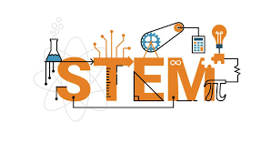

Insulation Experiment Report:
Evaluation
Our main setback was that while we accounted for the room temperature, we didn’t think the amount of heat loss through the opening of the cup would be such a big factor in the experiment. Another setback was that we had about 1 hour to conduct the experiment, and we didn’t imagine it could take more than 30 minutes, leading us to change the duration standard from the original standard of 75 degrees - 29 degrees to 65 degrees - 39 degrees. If we were to do this experiment again, we would try to make the experiment more accurate by measuring and applying the same amount of aluminum foil for each cup material. This is because we didn’t accurately measure how much aluminum foil acted as the lid of the cups, which could have altered our test results by acting as a worse or better insulator. The only reason we didn’t do the experiment again by fixing this mistake was the lack of time to finish the whole project.
